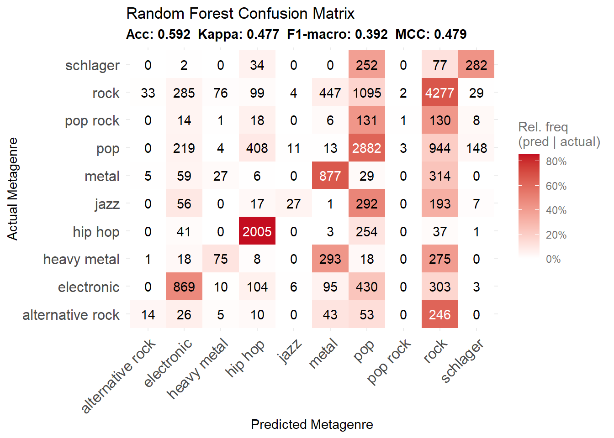
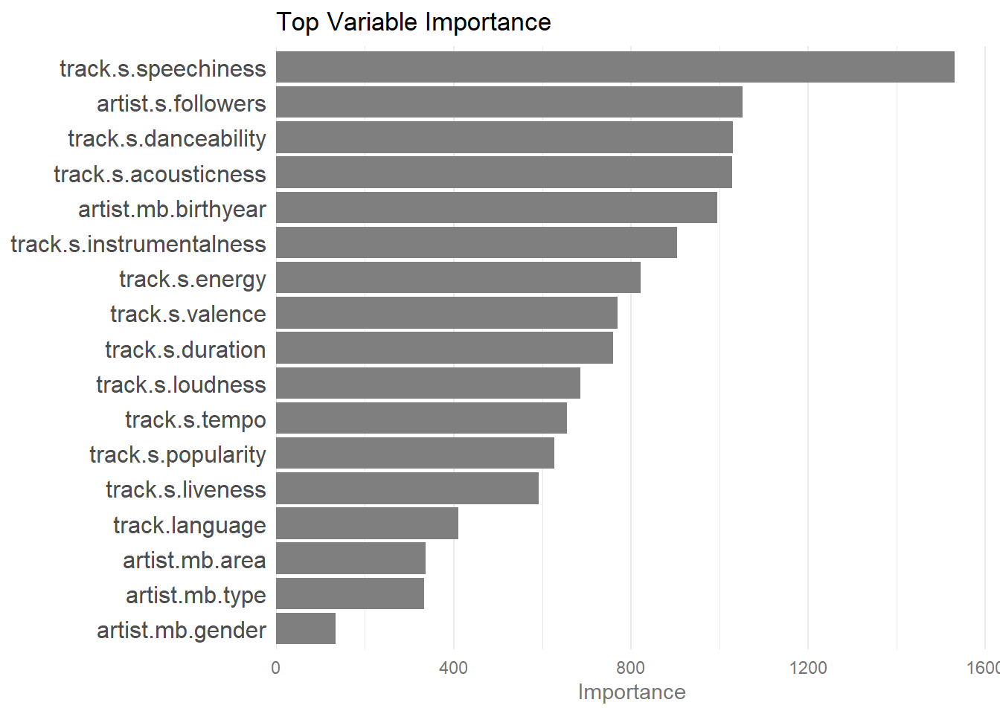
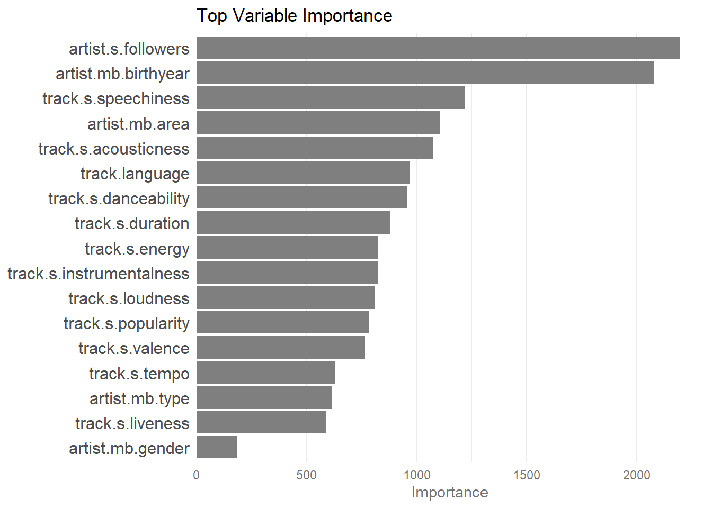

%%{init: {
'flowchart': {
'nodeSpacing': 50,
'rankSpacing': 80,
'useMaxWidth': true,
'htmlLabels': false,
'curve': 'basis'
},
'theme': 'base',
'themeVariables': {
'fontSize': '16px',
'fontFamily': 'Arial, sans-serif',
'primaryColor': '#ffffff',
'primaryTextColor': '#333333',
'primaryBorderColor': '#cccccc',
'lineColor': '#666666',
'textColor': '#333333'
}
}}%%
graph TD
A["POPTRAG"] --> B["select all potential features"]
B --> C["transform characters to factors, apply heuristics to lyrics features"]
C --> D["casewise deletion of excessive missing values (greater 40%)"]
D --> E["join with metagenre target labels on specified detail level"]
E --> F["subsample for prototypying (e.g., 20% of data)"]
F --> G["split into training and test set (80/20) on artist level to avoid data leakage"]
G --> H["train random forest imputer model for missing values on all tracks that are in any traing set but not in test sets"]
H --> I["impute missing values in all training and test sets"]
I --> J["select predictors for modeling"]
J --> K["undersample majority classes in training set to handle class imbalance (target class size = 10 * size of smallest class)"]
K --> L["train initial random forest classifier on training sets (1k trees, mtry = sqrt(number of predictors), min.node.size = 1)"]
L --> M["evaluate model performance on test sets (confusion matrix, accuracy, kappa, macro-F1, variable importance)"]
Random Forest Classification - Genre Discourse Analysis
1 Prototyping Random Forest Classifier for Metagenre Classification
This report presents the evaluation results of Random Forest classifiers trained to predict metagenres based on the MusicBrainz and Spotify genre tags (see preceeding analyses). The classifiers were trained for both low detailed and high detailed metagenre classifications.
1.1 Workflow
1.2 Data sets
Show/Hide Code
summarize_ds <- function(resolution, platform, split, df) {
data.frame(
Metagenre_Resolution = resolution,
Platform = platform,
Split = split,
N_Tracks = format(nrow(df), big.mark = ","),
N_Artists = format(nrow(dplyr::distinct(df, .data$artist.s.id)), big.mark = ",")
)
}
datasets <- dplyr::bind_rows(
summarize_ds("low (10-15)", "MusicBrainz", "Train", mb_train_low),
summarize_ds("low (10-15)", "MusicBrainz", "Test", mb_test_low),
summarize_ds("low (10-15)", "Spotify", "Train", s_train_low),
summarize_ds("low (10-15)", "Spotify", "Test", s_test_low),
summarize_ds("high (25-30)", "MusicBrainz", "Train", mb_train_high),
summarize_ds("high (25-30)", "MusicBrainz", "Test", mb_test_high),
summarize_ds("high (25-30)", "Spotify", "Train", s_train_high),
summarize_ds("high (25-30)", "Spotify", "Test", s_test_high)
)
knitr::kable(
datasets,
col.names = c("Metagenre Resolution", "Platform", "Split", "N~Tracks~", "N~Artists~"),
caption = "Dataset splits used in the analyses"
)| Metagenre Resolution | Platform | Split | NTracks | NArtists |
|---|---|---|---|---|
| low (10-15) | MusicBrainz | Train | 18,655 | 3,039 |
| low (10-15) | MusicBrainz | Test | 19,091 | 3,041 |
| low (10-15) | Spotify | Train | 18,559 | 2,826 |
| low (10-15) | Spotify | Test | 18,235 | 2,828 |
| high (25-30) | MusicBrainz | Train | 18,259 | 3,016 |
| high (25-30) | MusicBrainz | Test | 19,487 | 3,017 |
| high (25-30) | Spotify | Train | 18,698 | 2,819 |
| high (25-30) | Spotify | Test | 18,097 | 2,820 |
1.3 Features used for classification
1.3.1 List of potential features
Show/Hide Code
cols <- setdiff(colnames(mb_test_low), "metagenre")
knitr::asis_output(paste0("- ", cols, collapse = "\n"))- track.s.id
- artist.s.id
- artist.s.popularity
- artist.s.followers
- album.s.totaltracks
- album.s.releaseyear
- album.s.popularity
- track.s.danceability
- track.s.energy
- track.s.key
- track.s.loudness
- track.s.mode
- track.s.speechiness
- track.s.acousticness
- track.s.instrumentalness
- track.s.liveness
- track.s.valence
- track.s.tempo
- track.s.timesignature
- track.s.explicitlyrics
- track.s.popularity
- track.s.duration
- album.mb.language
- artist.mb.type
- artist.mb.gender
- artist.mb.area
- artist.mb.birthyear
- artist.mb.dead
- track.ab.p.danceable
- track.ab.p.female
- track.ab.p.acoustic
- track.ab.p.aggressive
- track.ab.p.electronic
- track.ab.p.happy
- track.ab.p.party
- track.ab.p.relaxed
- track.ab.p.sad
- track.ab.p.bright
- track.ab.p.tonal
- track.ab.p.voice
- track.ab.rhythm.tempo
- track.ab.rhythm.danceability
- track.ab.rhythm.onsetrate
- track.ab.low.loudness
- track.ab.low.dynamiccomplexity
- track.ab.tonal.chordchangerate
- track.ab.tonal.key
- track.ab.tonal.chordsnumberrate
- track.ab.tonal.mode
- track.ab.tonal.keystrength
- track.dz.rank
- track.dz.tempo
- track.dz.loudness
- track.dz.firstartist.followers
- track.dz.firstartist.nalbums
- track.dz.album.explicitlyrics
- track.dz.album.duration
- track.dz.album.followers
- track.language
- track.is.instrumental
- lyrics.distinct_words_ratio
- lyrics.repeated_lines_ratio
- lyrics.sentiment
- lyrics.nrc_anger
- lyrics.nrc_anticipation
- lyrics.nrc_disgust
- lyrics.nrc_fear
- lyrics.nrc_joy
- lyrics.nrc_sadness
- lyrics.nrc_surprise
- lyrics.nrc_trust
- lyrics.nrc_negative
- lyrics.nrc_positive
- track.is.dach
- label.med.artist.popularity
- label.med.album.popularity
- label.med.track.popularity
- n_NA
1.3.2 List of selected features after preprocessing and imputation
1.3.2.1 Low detailed Musicbrainz
Show/Hide Code
cols_mb_low <- eval_mb_low$varimp$Variable
knitr::asis_output(paste0("- ", cols_mb_low, collapse = "\n"))- track.s.speechiness
- artist.s.followers
- track.s.danceability
- track.s.acousticness
- artist.mb.birthyear
- track.s.instrumentalness
- track.s.energy
- track.s.valence
- track.s.duration
- track.s.loudness
- track.s.tempo
- track.s.popularity
- track.s.liveness
- track.language
- artist.mb.area
- artist.mb.type
- artist.mb.gender
1.3.2.2 Low detailed Spotify
Show/Hide Code
cols_s_low <- eval_s_low$varimp$Variable
knitr::asis_output(paste0("- ", cols_s_low, collapse = "\n"))- artist.s.followers
- artist.mb.birthyear
- track.s.speechiness
- artist.mb.area
- track.s.acousticness
- track.language
- track.s.danceability
- track.s.duration
- track.s.energy
- track.s.instrumentalness
- track.s.loudness
- track.s.popularity
- track.s.valence
- track.s.tempo
- artist.mb.type
- track.s.liveness
- artist.mb.gender
1.3.2.3 High detailed Musicbrainz
Show/Hide Code
cols_mb_high <- eval_mb_high$varimp$Variable
knitr::asis_output(paste0("- ", cols_mb_high, collapse = "\n"))- artist.mb.birthyear
- artist.s.followers
- track.s.speechiness
- track.s.acousticness
- track.s.danceability
- track.s.duration
- track.s.energy
- track.s.instrumentalness
- track.s.loudness
- track.s.valence
- track.s.popularity
- track.s.tempo
- track.s.liveness
- artist.mb.area
- track.language
- artist.mb.type
- artist.mb.gender
1.3.2.4 High detailed Spotify
Show/Hide Code
cols_s_high <- eval_s_high$varimp$Variable
knitr::asis_output(paste0("- ", cols_s_high, collapse = "\n"))- artist.mb.birthyear
- artist.s.followers
- track.s.speechiness
- artist.mb.area
- track.s.acousticness
- track.s.danceability
- track.s.duration
- track.s.loudness
- track.s.energy
- track.s.instrumentalness
- track.s.popularity
- track.s.valence
- track.language
- track.s.tempo
- track.s.liveness
- artist.mb.type
- artist.mb.gender
2 Low detailed metagenres
2.1 MusicBrainz
Show/Hide Code
plot_cm(eval_mb_low$confusion, eval_mb_low$metrics)
Show/Hide Code
plot_varimp(eval_mb_low$varimp)
2.2 Spotify
Show/Hide Code
plot_cm(eval_s_low$confusion, eval_s_low$metrics)
Show/Hide Code
plot_varimp(eval_s_low$varimp)
3 High detailed metagenre classification
3.1 MusicBrainz
Show/Hide Code
plot_cm(eval_mb_high$confusion, eval_mb_high$metrics)
Show/Hide Code
plot_varimp(eval_mb_high$varimp)
3.2 Spotify
Show/Hide Code
plot_cm(eval_s_high$confusion, eval_s_high$metrics)
Show/Hide Code
plot_varimp(eval_s_high$varimp)